《How to AI Almost Anything》Lecture 3：常见模型架构
⚡一分钟速览▼
这集讲啥：讲师 Paul Liang 用一节课（自称"像拿消防水管喝水"）把深度学习里所有常见架构装进一个统一框架。不像传统机器学习课每周讲一个孤立的模型，他要教你怎么自己设计架构——背后的原理是什么。
主线一句话：所有深度学习模型都在做两件事——① 学表示（抽特征）、② 聚合信息。不同架构只是用不同的"积木"实现这两件事；选哪块积木，由你数据的结构（不变性 / 等变性）决定。
记住这条主旋律：看一个新模型，别问"它叫什么"，问三件事——它的基本元素是什么？它怎么抽特征（学表示）？它怎么把特征聚合起来（聚合信息）？再问"我数据有什么不变性/等变性"，答案就告诉你要不要参数共享、用什么聚合函数。整节课就是把这套思路在 集合→序列→图像→图 上各跑一遍。
01这节课要干什么：不是堆模型，是给你一把通用钥匙▼
00:00开场 + 今天的目标
Paul 开场就说今天信息量大得"像拿消防水管喝水"——他要在一节课里把深度学习所有常见架构用一个统一框架讲完。然后是几句课程事务（项目提案今晚交、本周阅读两篇论文）。这两篇阅读很有意思，值得记一下：
- The Bitter Lesson（苦涩的教训）：AI 进步的规律是——越是不靠人工先验、靠大数据大算力的大模型，最后赢得越彻底。这对"你该怎么做 AI"是个灵魂拷问。
- Grokking / Double Descent（顿悟 / 双下降）：反直觉的现象——模型看起来在过拟合、表现很差，继续训练久一点，突然就学会了、表现飙升。和传统机器学习课教的"过拟合就停"完全相反。
02:35今天覆盖的四块
课程正文讲四件事：① 给所有架构一个统一范式；② 怎么设计自己的定制架构，原则是什么；③ 序列模型（时间序列等时序数据）；④ 卷积模型（空间数据）以及集合 / 图模型。
这节课的价值不在"认识更多模型"，而在建立一套看模型的元视角。学完你再读任何一篇 CNN / Transformer 论文，都能一眼拆出它在用哪些积木、为什么这么拼。
英文逐字稿（00:00–03:05）
02"好模型"是什么 + 领域专用 ↔ 通用 的谱系▼
03:36一条谱系：从领域专用到通用
你设计的任何 AI 模型，都落在一条谱系上：左边是领域专用（domain-specific）——大量吸收问题结构和专家知识；右边是通用（general-purpose）——靠更多数据和算力、对具体问题的结构假设更少。
- 设计一个高度定制的专用网络架构 → 偏领域专用。
- 设计一个嵌入了"你知道数据该有某种性质"的定制训练目标 → 也偏领域专用。
- 直接拿现成模型（off-the-shelf）来用，或做点微调/适配 → 偏通用。
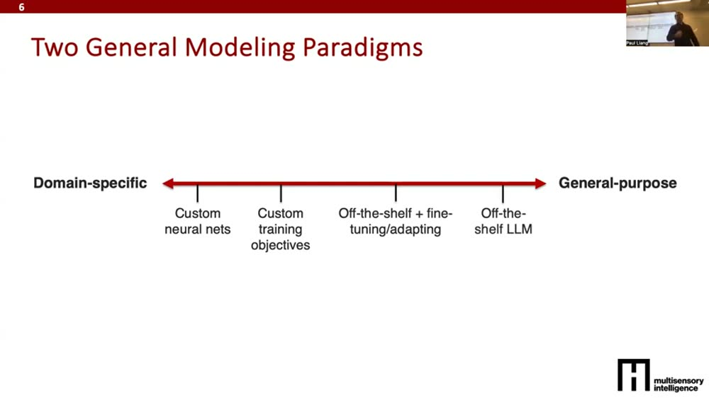
04:38什么叫"好模型"？设计前先想清楚
一个点落在谱系哪里，取决于"你要的好模型是什么样"。Paul 列了几条衡量标准——这是动手设计前第一件该想的事：
- 抓对语义信息——预测/生成/预报，得抓住正确的含义。
- 对的粒度——有的任务要精细定位，有的要高层摘要。
- 合适的数据 / 标注量——谱系上不同位置需要的（有标 + 无标）数据量天差地别。
- 资源约束——跑在大 GPU 上 还是 边缘小设备上。
- 可用性 / 可解释性——能不能向用户解释决策、是否易用。
哪些能妥协、哪些绝不妥协？Paul 强调：在写任何代码前，先把"这个问题的好模型该满足哪些性质、哪些是底线"想清楚。这一步决定了你整条技术路线往谱系的哪边走。
英文逐字稿（03:36–06:41）
03统一视角：所有模型都是两类积木拼出来的▼
06:41先回忆"模态画像"，再讲统一视角
承接两周前讲的"数据"：每份数据都有一张模态画像（modality profile）——把问题拆成几个特征维度（元素是什么、怎么表示、元素分布、结构是空间还是图、有哪些噪声、任务是什么）。理解了数据，再开始建模。
08:17深度学习模型永远在做两件事
这是全课的核心论点。任何深度学习模型都在交替做两件事：
- ① 学表示（learn representations）：把高维原始数据，转成更抽象、更稠密、更低维的特征，提炼出重要信息。
- ② 聚合表示（combine representations）：把不同部分学到的特征组合起来。比如图像里学到了"飞机"的特征、"天空"的特征、"地面房子"的特征，怎么合成对整个场景的理解。
一层层下去，就是不断"抽特征 → 聚合 → 再抽更抽象的特征"。
09:19两类积木 = 两个目的的实现方式
既然就两个目的，那所有深度学习模块就能归成两堆：
- 学表示的积木：全连接（本质是矩阵乘法）、ReLU（非线性激活，没有它再多层也只是个线性模型，加了它能逼近任意函数）、层归一化（Layer Norm，把数据标准化到漂亮范围）、卷积（Conv）、自注意力（Self-attention）。
- 聚合信息的积木：拼接（Concat）、交叉注意力（Cross-attention）、逐点相加（Add）、逐点取最大（Max）。
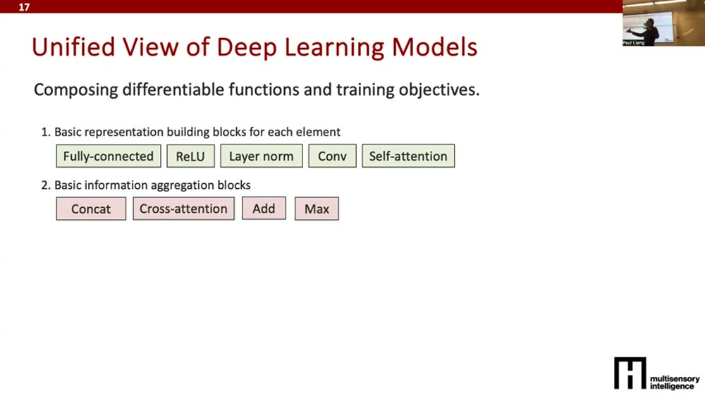
10:54拼起来 → 算 loss → 梯度下降
把数据（小三角形代表元素：图像的块、段落里的句子、句子里的词）一层层过"抽特征"的积木，中间穿插"聚合"的积木，得到越来越语义化的特征。设计完这个前向传播后，算 loss（预测和真实标签的差距），再用梯度下降更新参数。只要每块积木大体可微，你就能任意堆叠、组合任意多块。
啊原来如此 ①：Transformer 也好、CNN 也好，任何深度学习论文，本质都是"这些积木的某种组合"。关键差别只是——把哪块积木放在哪个位置。模型的"创新"往往就是积木摆法的创新。
英文逐字稿（06:41–12:58）
04集合与点云：第一个例子，置换不变性▼
12:58例子：集合（sets）和点云（point clouds）
Paul 拿一个他很喜欢的例子开场。集合：比如一堆人脸图，要检测哪张是异常（不符合群体特征）。点云：3D 网格，每个点是个 xyz 坐标，一堆点拼成一个 3D 形状，任务可能是把点云分类成不同家具，或生成新的 3D 模型。
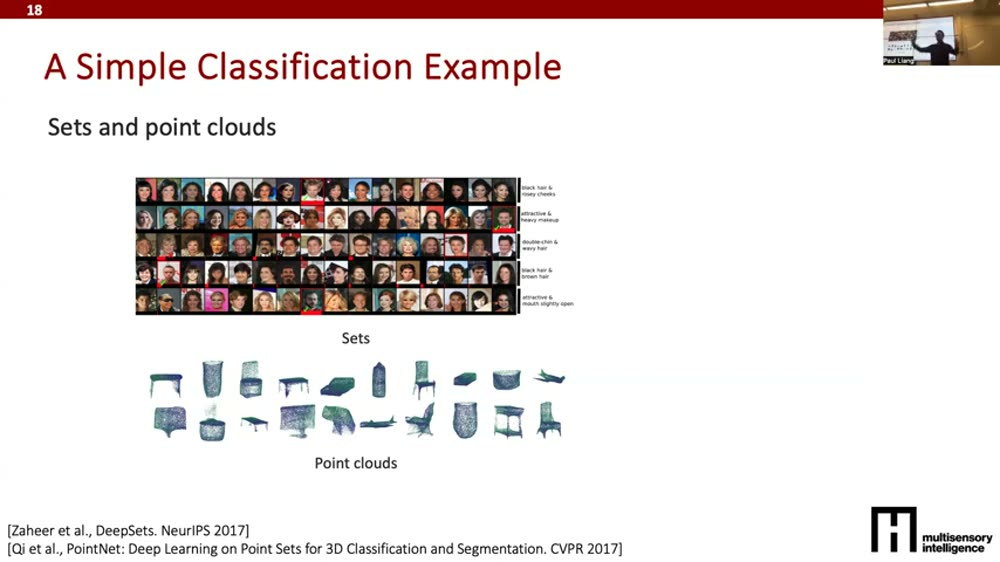
14:31关键结构：模型必须对元素顺序"无所谓"
集合数据最重要的结构是：模型的输出不该依赖元素的呈现顺序（置换不变性 permutation invariance）。无论我把五张图按 ABCDE 还是 ECDBA 给你，问"哪张异常"，答案都该一样。要满足这点，有两个关键设计：
- 参数共享：编码每个集合元素的特征提取器，用的是同一套参数（图里用同样的颜色表示）。
- 置换不变的聚合函数：把每个元素学到的表示聚合时，用对顺序不敏感的函数——比如逐元素相加（A+B+C 不管顺序结果都一样）。
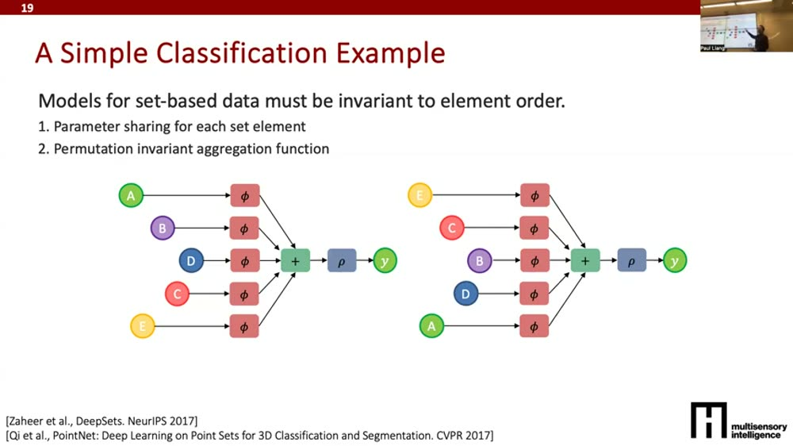
17:05不这么做会怎样？要多花 5! 倍的数据
反证一下两个设计为什么必要：
- 不做参数共享：每个元素用不同特征提取器（不同参数 θ1…θ5）。那同一个集合换个顺序，加起来的最终特征就变了，预测也变了。为了让模型学会"顺序无所谓"，你得把所有排列都喂给它——5 个元素就是 5! = 120 倍的样本量。
- 做了参数共享但聚合函数不是置换不变的（比如用拼接 Concat 而不是相加）：拼接 AB 和 BA 输出不同，又得喂所有排列，还是 5! 倍。
核心收获：把数据的结构（这里是"顺序无所谓"）焊进架构——靠参数共享 + 对的聚合函数——能让你少用几个数量级的训练样本。架构设计 = 帮模型省数据。
英文逐字稿（12:58–19:09）
05两个核心概念：不变性 vs 等变性▼
19:09结构 = 不变性 + 等变性
把上面的直觉一般化。当你拿到数据/任务，有两个概念极其重要，都归在"结构"这个大伞下面：
19:40不变性（invariance）：模型该"免疫"的变换
不变性 = 对输入做某些变换，标签/输出不该变。例子：一张写着数字"3"的图，目标是分类成"3"。那么——把图平移几个像素、旋转45°/90°、从 RGB 变成黑白——它还是"3"。这些就是模型该不变（免疫）的变换。如果模型对颜色、旋转、小位移敏感，你就得喂更多数据才能学会同一个任务。
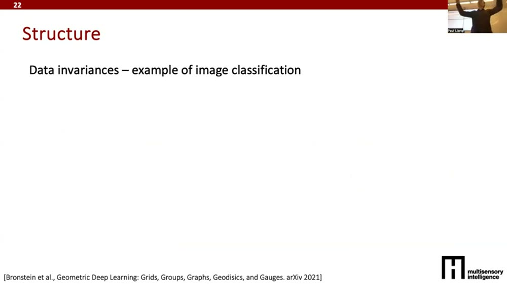
20:42等变性（equivariance）：模型该"跟着动"的变换
等变性 = 对输入做某变换，输出应该跟着做同样的变换。同样那张"3"的图，但任务换成语义分割（给每个像素标"背景/数字/树/海洋"）。这时如果我把图上移两像素，输出的分割图也该上移两像素；旋转 45°，分割图也该旋转 45°。位移和旋转在这里是等变变换。但颜色（RGB vs 黑白）仍该是不变的——换色不该改变分割结果。
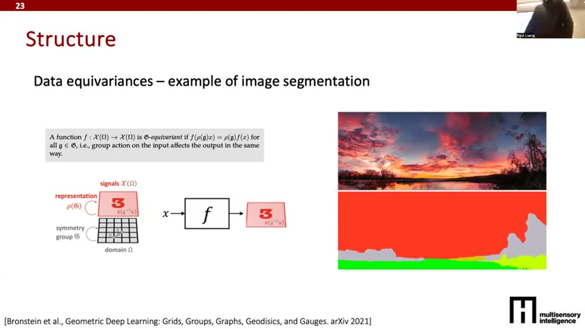
同一个变换，不变还是等变，取决于任务。有同学问"红块在黑块上面，翻转后不就不同了吗？"——Paul 回答：分类任务里翻转该不变，但分割任务里就该等变。先看任务，再定哪些变换该不变、哪些该等变。集合数据则要满足"置换不变"。把这些性质想清楚再设计架构，是省样本量的关键。
英文逐字稿（19:09–22:13）
06序列模型：时间不变、顺序等变 → RNN 与递归▼
22:44第一类常见架构：时序模型
元素是"词"，词组成更长的序列（句子、时间序列、代码、基因组数据）。任务可能是预测下一个词、或给整段序列分类。还是问那两个问题：怎么学表示？怎么聚合信息？时序数据的一个关键直觉是局部性（locality）——要预测下一个词，前一个词通常最重要，但也该兼顾更长的上文。
25:20序列数据的两条性质：时间不变、顺序等变
套用上一节的框架，序列模型应该：
- 对时间本身不变：把整个序列往前/往后挪一步，结果不该有大变化。
- 对词序等变（敏感）："狗追猫"和"猫追狗"——把词的顺序换了，模型必须给出非常不同的反应。
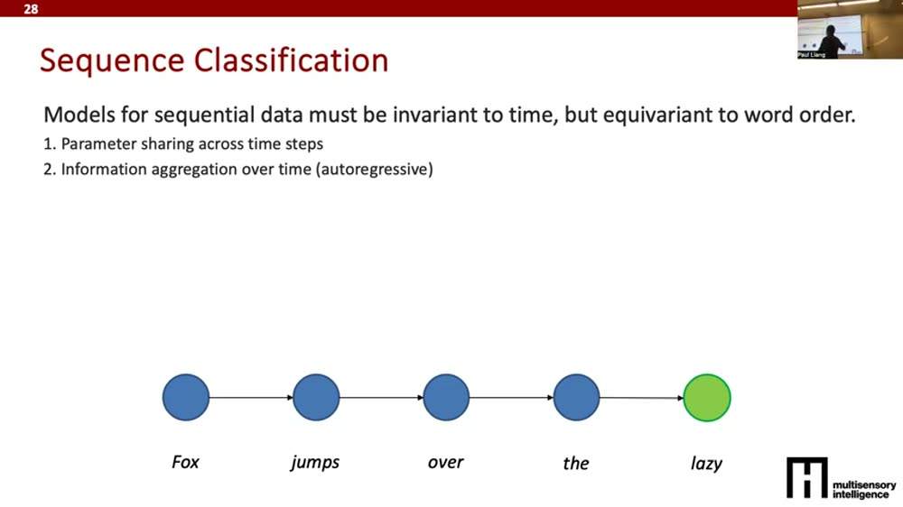
25:51两个设计：参数共享 + 沿时间递归聚合
- ① 跨时间步参数共享：处理每个词的特征提取器都用同一套参数——否则序列稍微左右挪一下输出就大变（破坏时间不变性）。
- ② 沿时间聚合信息（递归 recurrence）：先抽第一个词的特征，处理第二个词时累积上前一个词的信息，第三个词再累积前两个的……这个"沿时间累积"的过程正是顺序等变性的来源——换了词序，累积顺序就不同，结果就不同。
27:24数学写法：U、V 共享，H 累积信息
记号：X 是数据，第一层 tanh(U·X)（U 是参数，tanh 提供非线性），再过一层 V·(上层输出)，最后算分类 loss（负对数概率）。所有循环模型就是把同一个 U、同一个 V 在每个时间步 X₁、X₂、X₃… 上反复套用。信息累积在 H 里。
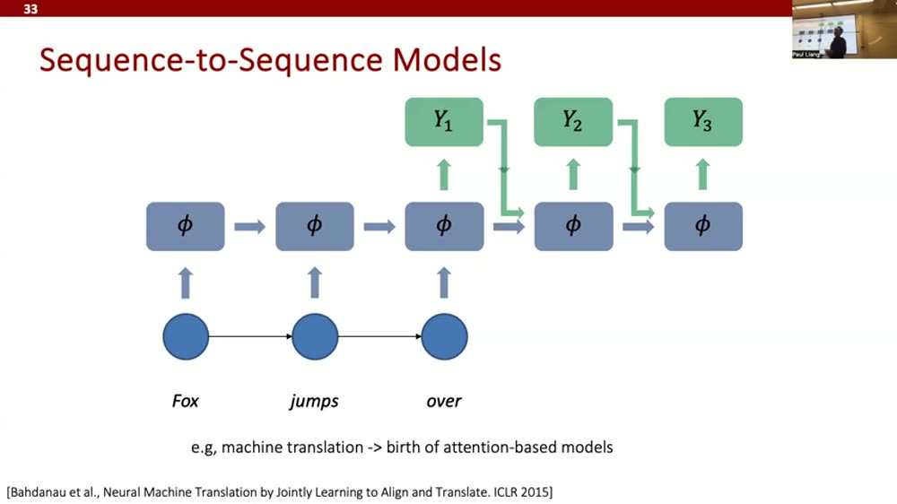
h⁽ᵗ⁾ = tanh(U·x⁽ᵗ⁾ + W·h⁽ᵗ⁻¹⁾)，z⁽ᵗ⁾=V·h⁽ᵗ⁾，loss 是负对数概率之和。U/V/W 三组参数在所有时间步共享，h 沿时间把信息一路累积过去。29:00从序列分类到序列生成（自回归解码）
把"输入序列→预测一个标签"改成"输入一个东西→输出多个东西"，就是序列生成。给个词"fox"，让模型续写故事/生成音乐：每步用同一套参数，把上一步生成的 y₁ 当作下一步的输入去生成 y₂，再拿 y₂ 生成 y₃……这就叫自回归解码（autoregressive decoding）。
RNN 没过时：Paul 特意说——别以为 RNN 是老古董。RNN → LSTM → 时序卷积网络（TCN）→ 状态空间模型（state space models），后者今天处理时间序列/连续数据时仍很流行，是 Transformer 的一个有力替代。同一条进化线，没断。
英文逐字稿（22:44–30:36）
07Seq2Seq + 注意力的诞生：从对齐热图说起▼
30:36序列到序列：进一个序列，出一个序列
把"进序列→出标签"和"进一个→出序列"合起来，就是序列到序列（seq2seq）：进一个序列、出一个序列。典型应用是机器翻译（3 个英文词 → 3 个法文词）。做法一样：读入序列时跨时间步参数共享 + 沿时间累积信息，读完后预测第一个输出，再自回归地一个个生成后续。
31:37一个学生问题引出关键：词的对应不是一一对齐的
学生问："为什么 Y₁ 对应 fox、Y₂ 对应 jumps？"——好问题。有些语言（主谓宾）翻译后语序大体保留，但很多语言不是。一篇机器翻译里程碑论文（Bahdanau 2015）画了对齐热图：输入英文序列 × 输出法文序列，告诉你哪个英文词对应哪个法文词。大部分落在对角线上（语序大致保留），但也有偏离对角线的——说明语序发生了移位。
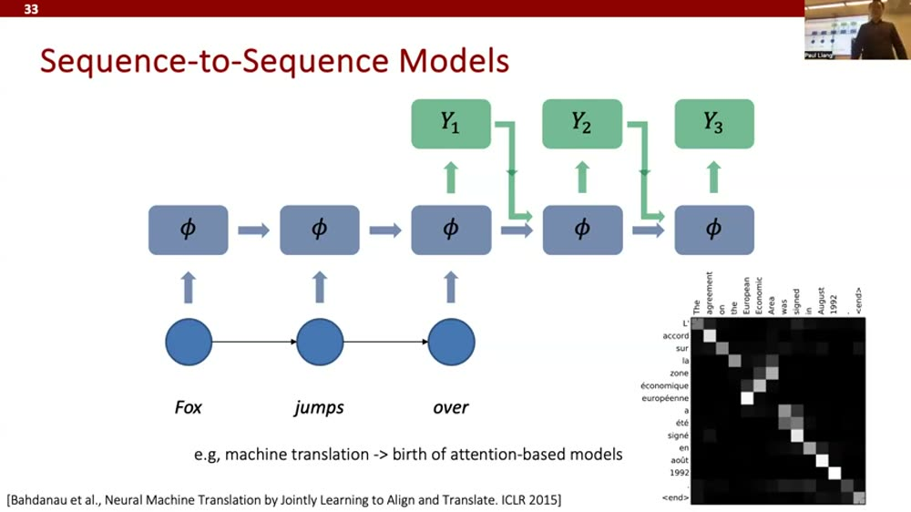
32:38注意力 = 动态权重
这些就叫基于注意力（attention）的方法：生成 Y₁ 时，看输入三个词里哪些最相关——是只看 fox，还是 fox 多一点、jumps over 少一点？生成第二个词时再算一遍。于是得到一个 T×T 的注意力矩阵（输入序列长度 × 输出序列长度）。语言差别越大（英↔中、英↔日），矩阵越偏离对角线。它不一定是方阵——3 个英文词可以对 10 个中文词，矩阵就是矩形 T₁×T₂，输出多长由模型自己决定（生成到 stop / 句末标记为止）。
这是一条历史主线：机器翻译用 seq2seq → seq2seq 加上注意力机制 → 注意力机制启发了今天所有的 Transformer。冷知识：第一篇 Transformer 论文，最早就是在机器翻译任务上拿到全面 SOTA 的。
英文逐字稿（30:36–35:14）
08注意力 / Transformer 五分钟：拆开那个公式▼
35:14注意力的直觉：给不同元素动态加权
注意力的核心想法是：有时我想给不同元素动态的权重。要给词"lazy"算一个新特征，我就去看它前面的四个词，算注意力分数——告诉我前四个词各自该对这个新特征贡献多少。拿到这五个分数后，用它们加权求和那些词的特征。
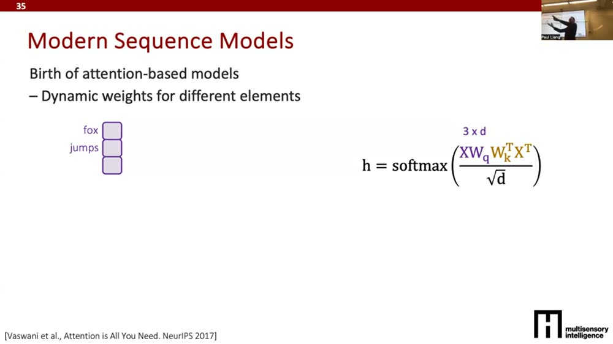
h = softmax(X·Wq·Wkᵀ·Xᵀ / √d)，本质是把每个词和其它词的相关度算成一张表。36:46用矩阵乘法拆解那个公式
Paul 把那个"人人见过但未必真懂"的公式一层层拆开（假设 3 个词，数据 X 是 3×d）：
- Wq：把数据 X 过一个可学习线性变换，把 one-hot 的词变成低维稠密向量。得到 3×d。
- Wkᵀ + 转置：再过另一个可学习参数并转置，3×d 变 d×3。
- 外积 X·Wq·Wkᵀ·Xᵀ：得到一个 3×3 的注意力矩阵——告诉你 fox/jumps/over 这三个词两两之间的注意力分数。注意力分数永远是"序列 × 序列"。
- 除以 √d（缩放）：矩阵每个格子是两个 d 维向量的点积，d 一大数值就暴涨；除以 √d 让方差回到 1/d，把值压回合理范围。
- 逐行 softmax：让每一行非负、求和为 1——于是能解读成"分配 50% 给这个词、25% 给那个"的概率分布。
- 乘上真实特征 X·Wv：光有注意力分数没用，得拿它去加权真正的特征向量。3×3 的注意力 × 3×d 的值 = 3×d 的输出。
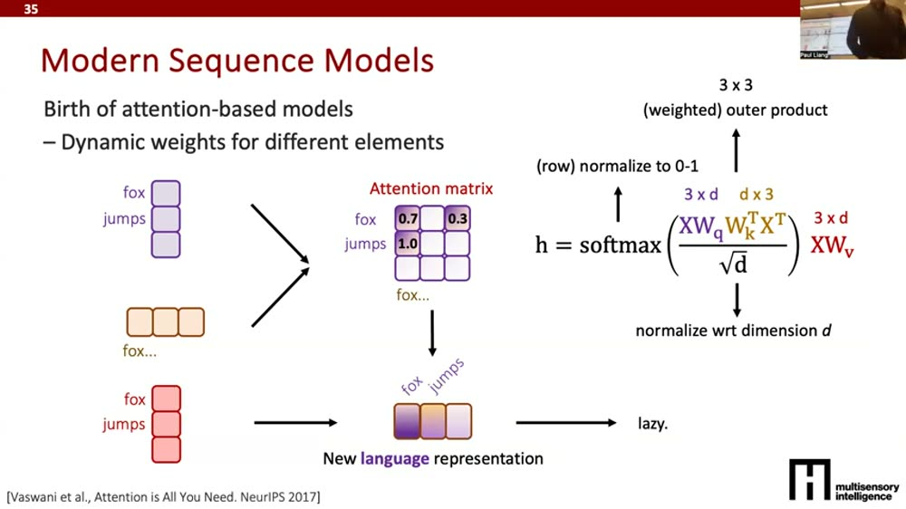
输出这个 3×d 向量，要理解成语言的新表示——三个词各自有了新特征，每个词的新特征是"看了和其它三个词的注意力、再按注意力加权它们的值向量"得来的。然后拿去做任何预测。这就是五分钟的 Transformer。
40:55Transformer 和 RNN 其实是一回事
看着不一样，本质没差多少——仍然遵守序列数据的两条铁律：
- 仍是参数共享：每个词进来都过同一组可学习变换（Wq/Wk/Wv 三组权重在所有词上重复用）→ 这带来时间不变性。
- 仍是信息聚合：只是不再串行地等 1→2→3（GPU 上慢），而是用矩阵乘法并行一次算出整个 5×5 注意力，一口气做完聚合。仍然对词序等变——置换序列，注意力矩阵就变，输出就变。
关键统一：RNN 和 Transformer 的差别不在"做不做参数共享 / 信息聚合"——两个都做。差别只在聚合是串行还是并行。Transformer 把"沿时间累积"换成"一次性算全体两两注意力"，于是能在 GPU 上并行、跑得快。数学目标没变，只是算得快。
英文逐字稿（35:14–42:30）
09空间数据：CNN 与 Vision Transformer▼
42:30空间数据：朴素做法为什么不行
图像该怎么办？最朴素：把图像拉平成一串像素，接一个全连接层到下一层。两个大问题：
- 不高效：200×200 的图就是 4 万个像素，要到 n 个特征的下一层，矩阵是 40000×n，巨大。
- 对位移敏感：全连接会让模型对图像上下左右挪几个像素、转几度都很敏感——而图像分类该对这些空间变换不变。
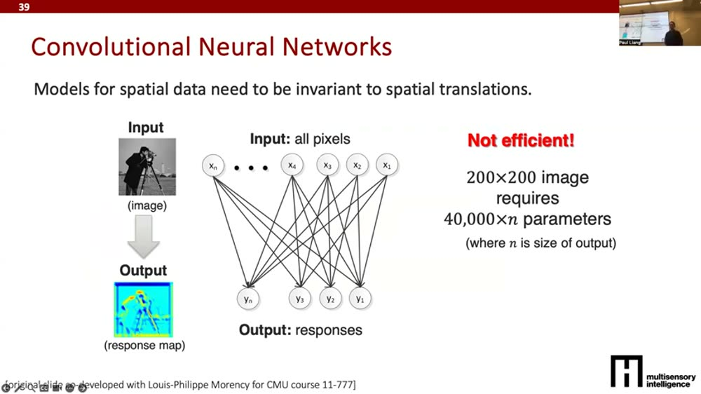
44:34CNN 的两个关键设计
- ① 稀疏连接（局部性）：不用把所有输入像素连到所有输出。要算图像右上角的输出，只看右上角附近几个像素（由 filter 大小决定，比如 3×3）。既省算力，又尊重局部性。
- ② 参数共享：这个 3×3 窗口扫过整张图时，每个位置用同一组权重。这带来空间不变性——像素在窗口内左右挪一点，输出不变。
具体操作：固定一个 K×K 窗口（如 3×3），对每个位置把窗口内信息汇总成一个特征，再把窗口滑到下一个 3×3、再下一个……每次都用同一组权重。这就是卷积。
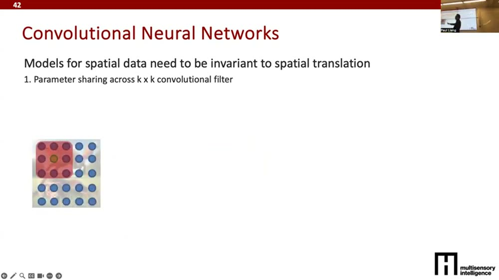
47:10池化 + 层层堆叠：从边缘到部件到物体
再加池化（pooling）：在一个小区域（如 2×2）里取最大值，让模型对小位移更不敏感、强迫它看"大局"。堆起来后：卷积先学边缘 → 组合边缘学形状/部件 → 再组合学更复杂的物体。卷积学"组合部件"，池化学"更抽象、忽略低层细节"。积木还是那两类，只是套在窗口/区域上反复用。
48:11Vision Transformer（ViT）：把图像切成块当"词"
如今很多人从 CNN 转向 ViT（虽然没 NLP 里 RNN→Transformer 那么剧烈）。同样两条原则：把图像切成 K×K 的块（patch），把这一串块当成一串"词"，对它跑 Transformer——给每个块算它和其它块（含自身）的注意力分数，加权求和得到特征。
- 仍是参数共享：同一组参数处理每个 K×K 块。
- 仍是信息聚合：跨块用注意力聚合。块设计得当，模型就对块间小位移不敏感——和 CNN 的卷积窗口异曲同工。
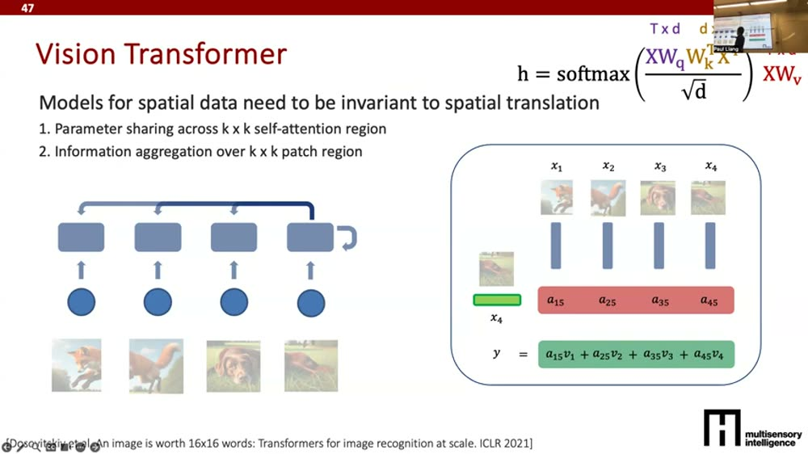
英文逐字稿（42:30–50:15）
10图网络：万物归一 + 全课总结▼
50:15图网络（GNN）：节点 + 边
最后是图（graph）：一堆节点，节点之间有些连边。还是那两件事。
- 参数共享（跨节点）：每个节点用同一套参数——否则没法泛化到新节点/新图。
- 沿邻居聚合信息：要学节点 A 的特征（A 是社交网络里的一个人），就去看 A 的邻居（A 的朋友 C、B、E）的特征，聚合进来；而每个邻居的特征又递归地依赖它们各自的邻居。
所以 GNN 就是：把邻居的嵌入聚合起来、过一个非线性变换，学出一个节点特征；邻居再依赖它们的邻居，层层递归。跨节点参数共享 + 按连接关系聚合邻居。
52:18漂亮的收束：序列、图像、集合，全是图的特例
这是全课最优雅的一刻——之前讲的所有架构，都是图网络的特例：
- 集合 = 只有节点、没有边的图。参数共享照旧，但因为没有邻居，学 A 的特征时不依赖任何别的节点（这就回到了 DeepSets）。
- 图像（空间数据）= 节点按上下左右近邻连边的图。每个区域只和它周围的格子相连（这就是卷积的局部连接）。
- 序列 = 排成一条链的图。这就是为什么所有序列模型都"跨元素参数共享 + 沿左右邻居聚合信息"。
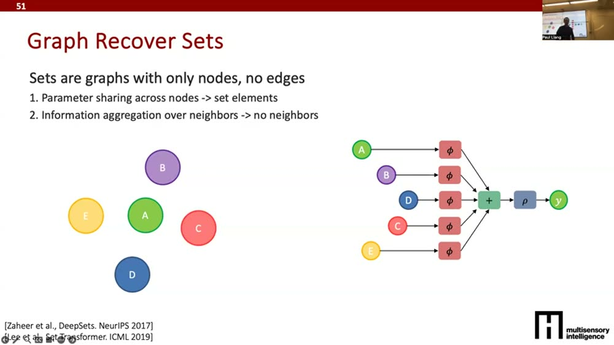
这就是整节课的"大一统"：不管是 RNN、CNN、Transformer 还是 GNN，骨架永远是"跨元素参数共享 + 沿邻居聚合信息"。差别只在"谁是谁的邻居"——序列里是左右、图像里是上下左右、集合里没有邻居、图里看连边。换了拓扑，就换出了不同的架构。
53:21总结：怎么建模（How to Model）
Paul 把上周的"怎么处理数据"和这周的"怎么建模"串成一份清单：
- 决定收集多少数据、标多少（成本和时间，超关键）。
- 清洗数据：标准化、找噪声、异常/离群点检测。
- 可视化数据：画图、降维（PCA、t-SNE）、聚类分析，理解数据和标签的关系。
- 定评估指标（代理指标 + 真实指标，定量 + 定性）。
- 选建模范式：领域专用 vs 通用。
- 搞清基本元素及其表示——把复杂数据拆成元素（序列/空间/集合/图）。
- 搞清数据的不变性和等变性（+ 模态画像其它部分，如该对什么噪声鲁棒）。
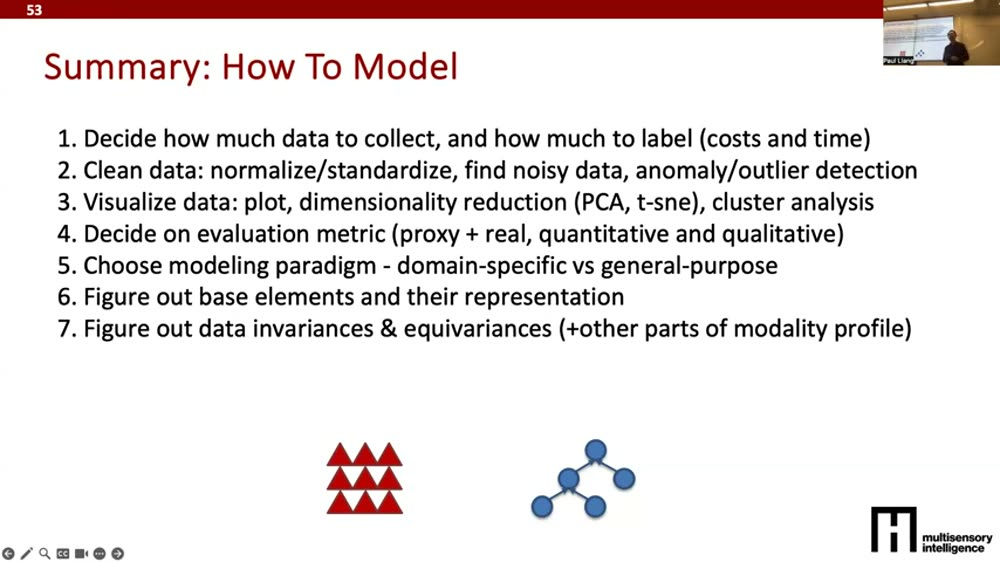
最重要的一条（Paul 反复强调）：第 7 步——搞清不变性与等变性。"不小心，模型需要的训练样本量会爆炸。"不变性 = 模型该免疫的，等变性 = 模型该跟着变的。然后整个流程是迭代的：数据收集 → 模型设计 → 训练 → 调参 → 评估，反复转圈直到满意。
英文逐字稿（50:15–55:56）
🧠费曼重讲：用大白话从头讲一遍▼
1. 别被一堆模型名字吓到——它们都是同一套乐高
你大概听过 CNN、RNN、LSTM、Transformer、GNN 这一串名字，感觉每个都得单独学。这节课的全部价值就一句话：它们不是五种东西，是同一套乐高的五种拼法。
这套乐高只有两种积木：① 抽特征（把一坨原始数据嚼成有意义的小特征）；② 把特征拼起来（把各处嚼出来的小特征合成一个更全面的理解）。就这么两块，反复交替地堆，就成了所有深度学习模型。看到一个新模型别慌，先把它拆成"它在哪抽特征、在哪拼特征"，立刻就不神秘了。
2. 那到底该怎么拼？——看你的数据"在乎什么、不在乎什么"
怎么决定积木的摆法？答案藏在你的数据里，要问两个问题：
- 有什么是"我不在乎、模型也别在乎"的？（不变性）比如认一张图是不是"猫"，你把猫的照片左移两格、转个角度、调成黑白——它还是猫。模型就该对这些变化免疫。
- 有什么是"我一在乎、模型就得跟着变"的？（等变性）比如你要把图里"猫的轮廓"框出来，你把整张图右移两格，那个框也得跟着右移两格。
这两个问题的答案，直接决定积木怎么摆。打个比方：你雇一个质检员，要先告诉他"零件转个方向不算次品（不变），但有划痕要标出来、划痕在哪你就标哪（等变）"。说错了，他就得看海量样本才能猜出你的标准——白白浪费力气。
3. 两个万能小技巧：参数共享 + 选对聚合方式
怎么把"不变性"焊进模型？有两个反复出现的小技巧：
技巧一：参数共享。处理每个元素（每个词、每个图像块、每个节点）都用同一套"嚼特征的嘴"。好处是：东西挪了位置，因为用的还是同一张嘴，嚼出来的味道不变 → 模型对位置就免疫了。要是每个位置换一张嘴，那同一个东西挪个位你就得重新教一遍，数据量直接爆炸。
技巧二：选对"拼特征"的方式。如果顺序无所谓（比如一筐水果你不在乎摆放顺序），就用相加这种"换顺序结果不变"的方式拼；要是用"拼接"（在乎先后），那 ABC 和 CBA 就成了两回事，又得喂模型所有排列。Paul 算过一笔账：5 个元素摆错方式，得多花 5! = 120 倍的训练数据。架构设计对了，是真能帮你省几个数量级的数据。
啊原来如此：所谓"设计架构"，本质就是把你对数据的常识（什么该变、什么不该变）提前告诉模型，省得它拿海量数据自己瞎猜。这就是为什么 CNN 处理图像比全连接省得多——它一上来就假设了"局部 + 位置无关"这两个图像常识。
4. 同一套乐高拼出四个经典架构
把这套思路在四种数据上各跑一遍，就得到四个"经典款"：
- 序列（句子/时间序列）→ RNN / Transformer：每个词用同一张嘴嚼（参数共享）；信息沿时间一路累积。RNN 是排队一个个传，Transformer 是一次性算出所有词两两的关联（注意力），所以能在 GPU 上并行、更快。两者数学目的一样，只是一个串行一个并行。
- 图像 → CNN / ViT：不把每个像素都连到一起（太贵又对位移敏感），而是拿个小窗口（3×3）在图上滑，每个位置用同一组权重（参数共享 + 局部）。CNN 先学边、再学形状、再学物体；ViT 则把图切成小块当"词"，跑一遍 Transformer。
- 集合（一筐无序的东西）→ DeepSets：每个元素同一张嘴嚼，再用相加这种"不在乎顺序"的方式拼起来。
- 图（社交网络/分子）→ GNN：每个节点同一张嘴嚼，聚合时只看自己的邻居，邻居再看邻居，层层递归。
5. 最妙的收尾：其实只有"图"一种东西
Paul 最后抖了个大包袱：上面四个看着不同，其实全是"图"的特例，区别只在"谁算谁的邻居"。
- 序列就是排成一条链的图（邻居=左右）。
- 图像就是格子按上下左右连的图（邻居=四周）。
- 集合就是没有任何边的图（没有邻居）。
所以你脑子里只要装一句话就够了：任何深度学习模型 = 每个元素用同一张嘴嚼特征（参数共享）+ 沿着"邻居关系"把特征拼起来（信息聚合）。换一种"邻居关系"，就换出一种架构。CNN、RNN、Transformer、GNN，全是这一句话在不同拓扑上的样子。
一句话复述（你现在应该能讲出来）：所有模型都在做"抽特征 + 拼特征"两件事；怎么拼，看你数据该对什么免疫（不变）、该对什么敏感（等变）；把这些常识用"参数共享 + 选对聚合函数"焊进模型，能省几个数量级的数据；而序列、图像、集合说到底都是"图"的特例，区别只在谁是谁的邻居。
🗂核心概念卡▼
softmax(XWqWkᵀXᵀ/√d)·XWv。和 RNN 本质一样（参数共享+聚合），只是用矩阵乘法并行聚合，更快。✅这集最该记住的几条▼
① 所有深度学习模型都在做两件事：学表示（抽特征）+ 聚合信息。看任何新模型，先拆出"它在哪抽特征、用什么方式聚合"。所有架构都是这两类积木的不同拼法。
② 选哪种架构，由数据的不变性和等变性决定。先问"模型该对什么免疫（不变）、该对什么同步响应（等变）"，答案就告诉你要不要参数共享、用什么聚合函数。这是设计前第一件该想的事。
③ 参数共享 + 对的聚合函数 = 把数据常识焊进模型 = 省几个数量级的数据。架构没设计好（不共享参数、或用了对顺序敏感的聚合），可能要多花 5! 倍样本。架构设计的本质是"提前告诉模型你的常识"。
④ RNN 和 Transformer 本质一样，只是串行 vs 并行。两者都做参数共享 + 信息聚合；Transformer 把"沿时间累积"换成"一次算全体两两注意力"，于是能在 GPU 上并行。数学目标没变，只是算得快。
⑤ 序列、图像、集合，全是"图"的特例，区别只在"谁是谁的邻居"。序列=链、图像=近邻图、集合=无边图。脑子里装一句话：任何模型 = 每个元素共享参数抽特征 + 沿邻居关系聚合。换拓扑就换架构。
🔗References▼
- Paul Liang — How to AI (Almost) Anything, Lecture 3: Common Model Architectures（MIT Media Lab, Spring 2025，本精读的原视频，时长约 56:25）· youtu.be/V0gRkmu4mFY
- Bronstein, Bruna, Cohen, Veličković — Geometric Deep Learning: Grids, Groups, Graphs, Geodesics, and Gauges（arXiv 2021，课上推荐的不变性/等变性形式化最佳参考）· arxiv.org/abs/2104.13478
- Zaheer et al. — Deep Sets（NeurIPS 2017，集合模型 = 参数共享 + 置换不变聚合）· arxiv.org/abs/1703.06114
- Qi et al. — PointNet: Deep Learning on Point Sets for 3D Classification and Segmentation（CVPR 2017，点云）· arxiv.org/abs/1612.00593
- Bahdanau, Cho, Bengio — Neural Machine Translation by Jointly Learning to Align and Translate（ICLR 2015，注意力机制 + 对齐热图的开山之作）· arxiv.org/abs/1409.0473
- Vaswani et al. — Attention Is All You Need（NeurIPS 2017，Transformer，最早在机器翻译上拿 SOTA）· arxiv.org/abs/1706.03762
- Dosovitskiy et al. — An Image Is Worth 16×16 Words: Transformers for Image Recognition at Scale（ICLR 2021，Vision Transformer）· arxiv.org/abs/2010.11929
- Lee et al. — Set Transformer（ICML 2019，集合的注意力式建模）· arxiv.org/abs/1810.00825
逐字稿基于视频 YouTube 自动字幕清洗去重而成（自动字幕含识别误差，已做断句与可读性修整，技术名词以正文中文笔记为准）。关键帧截图按 frame_NNN =（NNN−1）×180 秒映射到视频时间。论文链接为编者按课上提及的题名补充，便于延伸阅读。